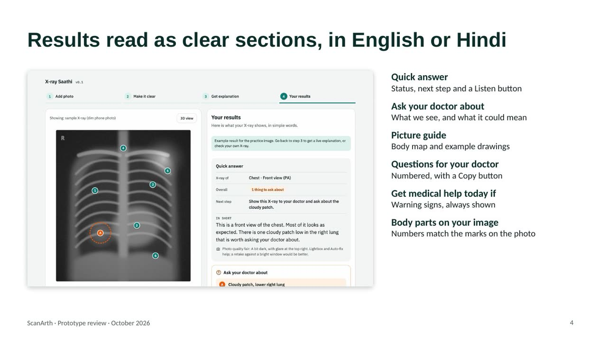
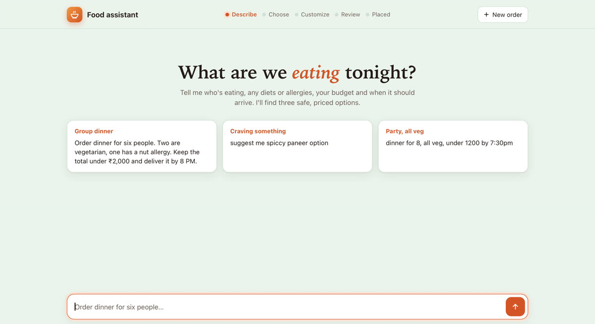

Years of experience
Backend platforms and high-scale applications.
Engineering leader with 12+ years across distributed systems, high-scale applications and AI products — focused on measurable impact, resilient architecture and teams that deliver.

A pilot-ready AI app that turns a phone photo of a scan into a plain-language explanation in English or Hindi — with safety rules written in code, not prompts.
Backend platforms and high-scale applications.
At Rakuten's payment platform.
Through LLM workflows at Samsung.
Across backend and AI engineering teams.
Products I design and build end to end on my own time — and a few highlights from my day job. Each project links to the notes I wrote about it.
Helps patients understand their X-ray, CT or MRI in simple words, from a phone photo of the film. FastAPI API, a Redis worker and an AI pipeline: image prep → fine-tuned chest model → optional reader → Claude → safety rules in code. Web and Android apps, AWS CDK infrastructure, an LLM-as-judge accuracy harness.
Pilot-ready prototype · AWS test stage, test scans only · Nov 2026
Samsung Research, Rakuten and MakeMyTrip.
Engineering notes from building LLM products: what worked, what didn't, and the numbers behind both.
I'm Manish, an engineering leader with 12+ years of building backend platforms, distributed systems and high-traffic applications across fintech, e-commerce, travel and edtech.
Today I'm a Chief Engineer at Samsung Research, where I lead backend and AI engineering for Samsung's AI-enabled learning platform for Smart TVs and mentor a team of 10+ engineers. My work there includes LLM workflows that cut manual content-curation effort by nearly 80%, and an assistant that turns live lecture audio into summaries and quizzes.
Before that I led Rakuten's move from a monolith to microservices — APIs 2.3x faster, deployments down from 6 hours to 2, 3000+ QPS at peak — and worked on booking and payment systems at MakeMyTrip, JustClickKaro and ITZ Cash Card.
Outside work I build AI products end to end, like ScanArth, and write up what I learn here.
B.E. Computer Science, Rajiv Gandhi Technical University · Outstanding Achievement Award for a payment-validation integration
The first version of ScanArth trusted the model too much. I asked Claude, in the prompt, to be careful: don't diagnose, don't name medicines, flag anything urgent. On clean test images it mostly behaved. Then real phone photos came in, and Claude Haiku started finding things that weren't there — "cavitary lesions" in three places, and a "possible pneumothorax" with an urgent warning attached.
A patient reading that at home would be terrified. The lesson I took: a prompt is a request; code is a guarantee. Anything that must always be true belongs in plain code that runs after the model and can override it.
ScanArth's pipeline ends with a step called safety.apply(). It runs on every answer, after Claude, after any retry or second look. No model output can skip it. The prompt still explains the rules — it makes good answers more likely — but the code is what makes bad ones impossible.
image_prep → chest model (hints) → reader (optional) → Claude → safety.apply()A missed urgent finding is the worst error the app can make, so "urgent" has four independent triggers, and any one is enough:
level: "urgent".pneumothorax, fracture_displaced, brain_bleed or stroke drawing.When any of them fires, the summary starts with "Please see a doctor today about this scan," the next step is replaced, and the plan's timing is forced to today.
Matching urgent words naively breaks immediately. Reports are full of "No acute haemorrhage" — the most reassuring sentence a patient can read. So a term up to six words after "no", "without", "negative for", "free of", "not" or "nor", in the same sentence, is ignored.
But negation has to end somewhere. Punctuation, "but", "and", "there", "new" and change words close it, so "No change in the large pneumothorax" still counts as urgent. And when the rule isn't sure, it errs one way only:
When unsure, the term counts as urgent.
Matching is on whole words, too: "non-displaced fracture" must not trigger "displaced fracture".
side says "left" loses its side, so the body map lights neither.A fixed disclaimer, default warning signs if Claude gave none, and — on a poor photo — a note on every finding that a doctor needs to check the original scan. Each fixed message has a reviewed Hindi version, and the translator swaps those in rather than sending them to the model.
The code didn't replace the prompt; it changed what the prompt is for. After the invented "cavitary lesions", I added a cautious photo-only mode to the instructions: at most two large, obvious differences, described in plain words ("a whiter area"), never disease names. In repeat runs without a report, the practice X-ray got no invented findings. The prompt lowers the error rate. The code sets the floor.
If you're building anything where a wrong answer hurts someone, write down the rules that must never break, and then make sure none of them depend on the model remembering.
"It looks right" is not a measurement. Once ScanArth produced sensible explanations, the real question became: how often is it right, and how does it fail? Answering that needed a harness I could run after every prompt, model or setting change.
Each test case is a folder with a scan image and its radiologist's report. The harness runs the scan through the same backend steps a real upload takes — image prep, the chest model, the explanation, the safety rules — skipping only the database and storage. By default the app does not see the report, because most patients upload only a photo.
data/eval/case-001/scan.jpg ──► app pipeline ──► explanation ─┐
├──► judge ──► verdict
data/eval/case-001/report.txt ─────────────────────────────────┘A separate judge model then compares the explanation with the report. One decision I'm glad I made early: the judge only gets text — the report, plus the explanation's summary, findings, normal list and urgent flag. It never sees the image, so it can't second-guess the radiologist.
| Judgement | Question |
|---|---|
| Report abnormal | Does the report describe at least one abnormal finding? |
| Main finding | Did the explanation describe the report's most important finding? Plain words count. |
| Side correct | If found, is it on the same side and in roughly the same place? |
| False findings | How many findings does the report not support? |
| Urgent correct | Is the urgent flag on only when same-day care is needed? |
These roll up into a table per model: main finding found, right side, false alarms, urgent OK, errors and seconds per scan. For patient safety I read them in a fixed order: urgent first (a missed urgent finding is the worst error), then left/right (a wrong side confuses patients and doctors), then false alarms (they frighten people for nothing), and only then misses — some misses are expected from a phone photo, and the app sends people to their report anyway.
To start quickly I wrote an importer for the de-identified Indiana University chest X-ray collection, with an option to add phone-photo effects — tilt, uneven light, glare, blur and noise. It's an approximation, so real photographed films still matter.
Several models run on the same scans in one go, and image prep and the chest model run once per case, so every model sees exactly the same input. A --no-review flag turns off the second-look model so each model is scored on its own. The same mechanism compares readers — no reader, Claude reading, MedGemma reading — and voting with three reads.
python -m eval.run_eval --no-review --models claude-haiku-5-5,claude-sonnet-5-5
python -m eval.run_eval --no-review --readers off,claude,medgemmaWith Haiku explaining and Opus judging, a case costs about $0.004, so a 100-case run is cheap enough to do on every meaningful change. The harness asks before it spends money, and every run saves a JSON results file with the settings used — the history of how accuracy moved as prompts and rules changed.
The numbers are the start of the review, not the end. The most useful habit the harness gave me: read every missed case, every false alarm and every wrong urgent flag, look for the pattern, fix one thing, and rerun on the same cases.
ScanArth can pass a chest X-ray model's hints to Claude: TorchXRayVision's DenseNet-121, which scores 18 findings. It was trained on clean digital X-rays. My users upload phone photos of film — tilted, glary, unevenly lit. On those, the base model hinted Fracture and Pneumothorax on almost every photo. So I fine-tuned it.
I used the IU X-ray (Open-I) dataset: images plus each study's radiologist caption. Two problems surfaced immediately.
The split is by study, fixed by a hash: 76% train, 10% validation, 14% test. Any study used by the app's own eval sets is forced into test, so training never sees them.
Preprocessing copies the app exactly — grayscale, levels stretch, CLAHE, 224×224 — so the model trains on what it will see in production. Then half the training images are turned into fake phone photos: background around the film, a tilted camera, uneven light, glare, moiré, blur, noise and JPEG artefacts.
Several findings — Pneumothorax, Mass, Consolidation and others — have fewer than 40 positives in train. Training on those directly would mostly teach noise. Instead, for those findings the model is held to the original model's answer on the clean image. That keeps it from forgetting them, and the same hold teaches it to answer the same for a photo as for the clean scan.
The app treats a score ≥ 0.5 as a hint, and TorchXRayVision scales scores so 0.5 is each finding's operating point. Training picks new points on validation (clean and simulated photos together) and saves them inside the weights. Findings with at least 10 validation positives get the point that best separates present from absent. Rarer ones get the point that only 2% of scans without the finding reach — without that, Pneumothorax and Pneumonia scored just over 0.5 on almost every photo.
| Model | Test set | Mean AUC | Caught | False hints |
|---|---|---|---|---|
| Base | Clean | 0.792 | 84% | 45% |
| Base | Simulated photo | 0.658 | 73% | 48% |
| Base | 20 real photos | 0.906 | 83% | 53% |
| v1 | Clean | 0.831 | 62% | 10% |
| v1 | Simulated photo | 0.788 | 57% | 12% |
| v1 | 20 real photos | 0.922 | 58% | 8% |
v1 gives a quarter as many false hints, at the cost of catching fewer findings. That trade is better at any balance: raising the base model's cut-off to match v1's false hints catches far fewer (at 0.6: 40% caught, 14% false hints on photos). On the 20 real phone photos, the base model gave 196 hints in total; v1 gave 36, and no hints on most normal scans. Training takes about 15 minutes on an M5.
The gain so far is cleaner input, not better explanations.
In the app's own eval on the 20 real photos, v1 gives the same end result as the base model: main finding caught in 29% of cases, 0.2 false alarms per case. Most misses are findings the explanation leaves out or puts on the wrong side — something hints this weak don't change. Nodule and Lung Lesion stay near chance either way: small nodules don't survive a 224×224 photo.
The limits are clear too: labels come from captions by rules; several findings have under 10 test examples; the base model may have seen these images in training; and simulated photos aren't real ones. What would help most is more real phone photos with reports — which is exactly what the eval harness is waiting for.
An app for patients in India has to be cheap to run, or it doesn't get to exist. On the practice chest X-ray, a ScanArth explanation with Claude Haiku costs about $0.001 — including the model's thinking. Here's where the savings come from.
The system prompt and the output schema are identical for every scan, so they go first and are cached. Repeat requests within about five minutes read them from cache at roughly a tenth of the price. The per-scan message carries only what changes: the image, the scan type, the photo quality, the model's hints and the report text.
| Call | Input tokens | Output tokens | Cost |
|---|---|---|---|
| Explanation (first of the day, writes the cache) | 1,066 + 1,412 cache write | 1,501 | ~$0.001 |
Image tokens grow with area — roughly width × height / 750. The pipeline enhances the photo, then shrinks it to 1024 px on the longest side before it goes to Claude. Every extra pixel is paid for on every scan, so the size is a setting I tune with the eval harness, not a default I forget about.
Every upload gets a SHA-256 cache key over the image bytes, report text, scan type, system prompt, schema, fixed safety messages and model settings. If a finished scan with the same key exists from the last 7 days, the new scan copies its result instantly — no Claude call, no image saved. Because the prompt and settings are in the key, an old answer is never served after a change. It only helps exact repeats (a double tap, a retry), and that's the point: it's free correctness, not a clever approximation.
max_tokens is set to 8,000. That's a ceiling, not a cost — billing counts only tokens actually used — and it's high enough that an answer is never cut off. A cut-off or refusal is treated as a failure rather than a partial answer.
Each call logs input, cache-read, cache-write and output tokens, so cost is checked from the server log rather than estimated. The biggest lever left is thinking effort: dropping it from medium to low would cut thinking tokens further. I haven't, because the eval harness hasn't shown it's safe yet. Cheap is only good if it's still right.
Ordering dinner for a group is a surprisingly good test for an AI agent. "Order dinner for six people. Two are vegetarian, one has a nut allergy. Keep the total under ₹2,000 and deliver it by 8 PM." One sentence, four hard constraints — and getting the allergy wrong can send someone to hospital.

FoodAgent's design rests on one rule: Claude talks, the engine decides. Claude understands the request, plans the steps and writes the replies. Every price, arrival time and allergy decision comes from a deterministic engine that Claude can only reach through six tools.
get_user_context · recommend_bundles · modify_bundle · check_eta · confirm_cart · place_orderButton edits (− / + / bin) skip the model entirely: about 1 ms, with the same safety checks. An over-budget change is refused right on the card.
An eval suite runs 240 generated requests through the engine, and an independent auditor recomputes every total, arrival time and allergen from the raw data instead of trusting the engine.
| Check | Result |
|---|---|
| Allergen, diet, budget or deadline violations (617 bundles) | 0 |
| Unsafe "add this dish" requests refused | 2,633 / 2,633 |
| Attack inputs blocked (injection, card numbers, ₹0) | 18 / 18 |
| Normal messages wrongly blocked | 0 / 262 |
| Sampled conversations ordered cleanly | 48 / 48 |
| Engine recommendation speed | median 0.1 s, p95 1.2 s |
The pattern generalises well beyond food: let the model handle language and planning, keep every fact and every guarantee in deterministic code behind tools, and check the model's words against the tools' data before a user sees them.